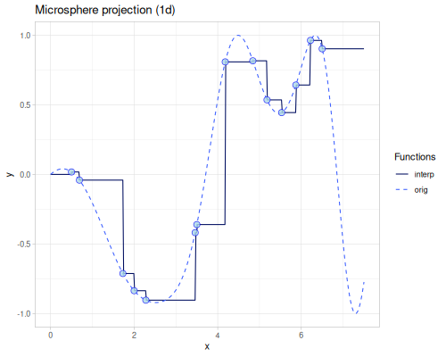
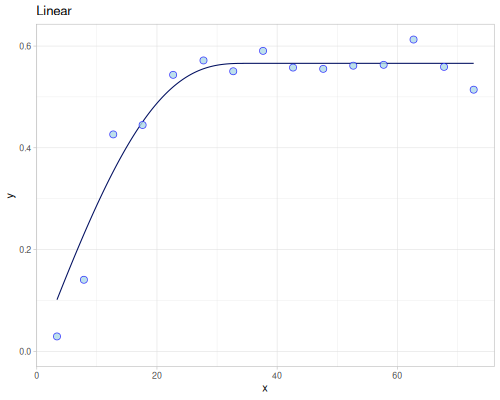

Interpolation
Interpolation namespace defines the unified API for various interpolation methods. Most of them also extrapolates. Methods include:
- 1d interpolation
- 2d interpolation on irregular grid points
- Multivariate interpolation
- Kernel based interpolation
- Smoothing
All methods are accessible from fastmath.interpolation namespace via a multimethod interpolation. Additionally each method is implemented as a regular function in the dedicated namespace. interpolation returns an interpolant function
Both examples below are equivalent:
(require '[fastmath.interpolation :as i]
'[fastmath.interpolation.linear :as linear])(def i1 (i/interpolation :linear [1 2 3] [4 5 -1]))(def i2 (linear/linear [1 2 3] [4 5 -1])){:i1 (i1 2.5)
:i2 (i2 2.5)}{:i1 2.0, :i2 2.0}List of all possible methods:
(sort (keys (methods i/interpolation)))(:akima
:b-spline
:barycentric
:bicubic
:bilinear
:cubic
:cubic-2d
:cubic-smoothing
:divided-difference
:gp
:kriging
:linear
:loess
:microsphere-projection
:monotone
:neville
:polynomial
:rbf
:shepard
:sprague
:step
:step-after
:step-before)The following functions and samples will be used as a target to illustrate usage of described method.
1d target
\[f(x)=\sin\left(\frac{x\cos(x+1)}{2}\right)\]
(defn target-1d [x] (m/sin (* 0.5 x (m/cos (inc x)))))(target-1d 4.0)0.5373775050861961Points used in interpolation
(def xs1 [0.5 0.69 1.73 2.0 2.28 3.46 3.5 4.18 4.84 5.18 5.53 5.87 6.22 6.5])(def ys1 (map target-1d xs1))
2d target
\[f(x,y)=\sin\left(\frac{x-100}{10}\cos\left(\frac{y}{20}\right)\right)+\frac{x}{100}+\left(\frac{y-100}{100}\right)^2+1\]
(defn target-2d [[x y]] (m/+ 1.0 (m/sin (* (/ (- x 100.0) 10.0) (m/cos (/ y 20.0))))
(m// x 100.0)
(m/sq (m// (m/- y 100.0) 100.0))))(target-2d [20 20])2.7649202623006808Grid
Points for grid interpolation
(def xs2 [20 25 30 35 40 50 58 66 100 121 140 150 160 170 180])(def ys2 [20 30 58 66 90 121 140 152 170 180])(def zss (for [x xs2]
(for [y ys2]
(target-2d [x y]))))(def xss (repeatedly 300 #(vector (r/drandom uniform-seed-44 20 180)
(r/drandom uniform-seed-44 20 180))))(def ys3 (map target-2d xss))(defn error-1d
[interpolant]
(m/sqrt (calc/integrate (fn [^double x] (m/sq (m/- (target-1d x) (interpolant x)))) 0.5 6.5)))(error-1d (linear/linear xs1 ys1))0.2110302144467739For 2d case the following formula will be used:
\[error_{2d}(f,g)=\|f-g\|=\sqrt{\int_{20}^{180}\int_{20}^{180}|f(x,y)-g(x,y)|^2\,dx dy}\]
(defn error-2d
[interpolant]
(m/sqrt (calc/cubature (fn [xy] (m/sq (m/- (target-2d xy) (interpolant xy))))
[20.0 20.0]
[180.0 180.0])))(error-2d (linear/bilinear xs2 ys2 zss))102.036787504521091d
Linear
Linear piecewise interpolation and extrapolation. Extrapolation uses a slope from the boundaries. See more on Wikipedia
(require '[fastmath.interpolation.linear :as linear])(def linear (linear/linear xs1 ys1))(linear 4.0)0.49924424111385607(error-1d linear)0.2110302144467739Cubic
Natural cubic spline (second derivatives at boundary points have value \(0\)) interpolation and extrapolation. See more on Wikipedia
(require '[fastmath.interpolation.cubic :as cubic])(def cubic (cubic/cubic xs1 ys1))(cubic 4.0)0.5516054931803801(error-1d cubic)0.0275840592896124Akima
See more on Wikipedia
(require '[fastmath.interpolation.acm :as acm])(def akima (acm/akima xs1 ys1))(akima 4.0)0.5335842087231077(error-1d akima)0.03487751999898592Neville
See more on Wikipedia
(require '[fastmath.interpolation.acm :as acm])(def neville (acm/neville xs1 ys1))(neville 4.0)0.5432043004304535(error-1d neville)0.8675392877418397Barycentric
Rational interpolation as described in Numerical Recipes ch. 3.4. The order (default \(1\)) parameter contols number of points used to calculate weights. Higher order means better accuracy.
(require '[fastmath.interpolation.barycentric :as barycentric])(defn barycentric
([] (barycentric/barycentric xs1 ys1))
([order] (barycentric/barycentric xs1 ys1 {:order order})))((barycentric) 4.0)0.5492673111356233| order | error | barrycentric(4.0) | error at 4.0 |
|---|---|---|---|
| 0 | 0.5193270391333753 | 0.6329368698778738 | 0.0955593647916777 |
| 1 | 0.03176373180495161 | 0.5492673111356233 | 0.011889806049427243 |
| 2 | 0.05019164899125852 | 0.5160607443493412 | 0.021316760736854845 |
| 3 | 0.028650229888319802 | 0.5232915410624766 | 0.014085964023719533 |
| 4 | 0.00351102181650211 | 0.5349629695697342 | 0.0024145355164618687 |
| 5 | 0.009022181871044352 | 0.5387189359388596 | 0.0013414308526634722 |
B-spline
(require '[fastmath.interpolation.ssj :as ssj])(defn b-spline
([] (ssj/b-spline xs1 ys1))
([degree] (b-spline degree nil))
([degree hp1] (ssj/b-spline xs1 ys1 {:degree degree :hp1 hp1})))((b-spline) 4.0)0.1610170071559863Divided difference
(require '[fastmath.interpolation.acm :as acm])(def divided-difference (acm/divided-difference xs1 ys1))(divided-difference 4.0)0.5432043004304531(error-1d divided-difference)0.8675392877418397Polynomial
(require '[fastmath.interpolation.ssj :as ssj])(def polynomial (ssj/polynomial xs1 ys1))(polynomial 4.0)0.5432043380309324(error-1d polynomial)0.8675392846805364Monotone
(require '[fastmath.interpolation.monotone :as monotone])(def monotone (monotone/monotone xs1 ys1))(monotone 4.0)0.6588206176299103(error-1d monotone)0.1517488499630331Step
(require '[fastmath.interpolation.step :as step])(defn step
([] (step/step xs1 ys1))
([point] (step/step xs1 ys1 {:point point})))(def step-before (step/step-before xs1 ys1))(def step-after (step/step-after xs1 ys1))| method | error | value at 4.0 |
|---|---|---|
| step-before | 0.849159325039357 | 0.8087819747808206 |
| step-after | 0.7429959099336633 | -0.3605827968499356 |
| step | 0.4328611328633974 | 0.8087819747808206 |
| step (point=0.55) | 0.42287483285733546 | 0.8087819747808206 |
| step (point=0.25) | 0.5962341092433667 | 0.8087819747808206 |
| step (point=0.75) | 0.49446591280052093 | -0.3605827968499356 |
 |
|
Loess
(require '[fastmath.interpolation.acm :as acm])(defn loess
([] (acm/loess xs1 ys1))
([bandwidth] (acm/loess xs1 ys1 {:bandwidth bandwidth})))Cubic smoothing
(require '[fastmath.interpolation.ssj :as ssj])(defn cubic-smoothing
([] (ssj/cubic-smoothing xs1 ys1))
([rho] (ssj/cubic-smoothing xs1 ys1 {:rho rho}))) |
 |
2d grid
Bilinear
(require '[fastmath.interpolation.linear :as linear])(def bilinear (linear/bilinear xs2 ys2 zss))(error-2d bilinear)102.03678750452109Bicubic
(require '[fastmath.interpolation.acm :as acm])(def bicubic (acm/bicubic xs2 ys2 zss))(error-2d bicubic)103.97025992767536Cubic 2d
(require '[fastmath.interpolation.cubic :as cubic])(def cubic-2d (cubic/cubic-2d xs2 ys2 zss))(error-2d cubic-2d)103.23387133898065Multivariate and kernel based
Microsphere projection
(require '[fastmath.interpolation.acm :as acm])|  |
(error-1d (acm/microsphere-projection xs1 ys1))0.20201293127226447(error-2d (acm/microsphere-projection xss ys3))52.77979469283332Shepard
(require '[fastmath.interpolation.shepard :as shepard])Radial Basis Function
(require '[fastmath.interpolation.rbf :as rbf])(defn chart-f [f title] (-> (ggplot/function f {:x [-5 5] :title title})
(ggplot/->image)))Polynomial term
(defn polynomial-terms-1d [^double x]
[1.0 x (m/sq x)])(defn polynomial-terms-2d [[^double x ^double y]]
[1.0 x y (m/* x y) (m/sq x) (m/sq y)]) |
|
 |
(error-2d (rbf/rbf xss ys3 (kernel/rbf :gaussian {:shape 0.1})))365.96788014805696(error-2d (rbf/rbf xss ys3 (kernel/rbf :matern-c2 {:shape 0.15})))316.10296877225454(error-2d (rbf/rbf xss ys3 (kernel/rbf :gaussians-laguerre-22 {:shape 0.07})))376.435234072405(error-2d (rbf/rbf xss ys3 (kernel/rbf :thin-plate)))49.070725801843054Smoothing
Kriging
Variograms
(require '[fastmath.kernel.variogram :as variogram]
'[fastmath.interpolation.kriging :as kriging])(defn svar-image [f emp title]
(let [x (map :h emp)
y (map :gamma emp)]
(-> (ggplot/function+scatter f x y {:title title :ylim [0 nil]})
(ggplot/->image))))(def empirical-matheron-1d (variogram/empirical xs1 ys1))(def empirical-matheron (variogram/empirical xss ys3 {:size 20}))empirical-matheron[{:n 116, :h 3.3604788552002978, :gamma 0.05610650116225876}
{:n 385, :h 7.841219583707931, :gamma 0.18995728933979483}
{:n 606, :h 12.72578480586009, :gamma 0.399844655716175}
{:n 856, :h 17.611233442491304, :gamma 0.4194793467635297}
{:n 1019, :h 22.694649851980536, :gamma 0.4993167205111838}
{:n 1173, :h 27.74503808347392, :gamma 0.5232922610403302}
{:n 1322, :h 32.696030602647625, :gamma 0.5223125852571721}
{:n 1527, :h 37.65818295299809, :gamma 0.5426056881417575}
{:n 1594, :h 42.65227807229347, :gamma 0.5227361157844413}
{:n 1803, :h 47.67443166086058, :gamma 0.5243286183079909}
{:n 1784, :h 52.675449304556054, :gamma 0.5272068497879318}
{:n 1922, :h 57.731016242599935, :gamma 0.5285755419763869}
{:n 1909, :h 62.70585327047225, :gamma 0.5652895296636227}
{:n 1966, :h 67.77992830214916, :gamma 0.5265816327093601}
{:n 1977, :h 72.71580210020514, :gamma 0.49759061919470493}](def empirical-cressie (variogram/empirical xss ys3 {:estimator :cressie :size 20}))(def empirical-highly-robust (variogram/empirical xss ys3 {:estimator :highly-robust :size 20
:remove-outliers? true}))empirical-highly-robust[{:n 116, :h 3.3604788552002978, :gamma 0.02913016400873318}
{:n 385, :h 7.841219583707931, :gamma 0.14056514492191244}
{:n 606, :h 12.72578480586009, :gamma 0.42633847448010354}
{:n 856, :h 17.611233442491304, :gamma 0.44483727296978925}
{:n 1019, :h 22.694649851980536, :gamma 0.5434941912574424}
{:n 1173, :h 27.74503808347392, :gamma 0.571757191071463}
{:n 1322, :h 32.696030602647625, :gamma 0.5504904163482222}
{:n 1527, :h 37.65818295299809, :gamma 0.5905951431086924}
{:n 1594, :h 42.65227807229347, :gamma 0.5577607587471852}
{:n 1803, :h 47.67443166086058, :gamma 0.555261258787647}
{:n 1784, :h 52.675449304556054, :gamma 0.561444986664588}
{:n 1922, :h 57.731016242599935, :gamma 0.5631892305752904}
{:n 1909, :h 62.70585327047225, :gamma 0.6128688264262536}
{:n 1966, :h 67.77992830214916, :gamma 0.5591266023267967}
{:n 1977, :h 72.71580210020514, :gamma 0.5142798048326319}](def empirical-quantile (variogram/empirical xss ys3 {:estimator :quantile :size 50
:quantile 0.92}))(def empirical-M-robust (variogram/empirical xss ys3 {:estimator :m-robust :size 50}))Semi-variograms
(def variogram-linear (variogram/fit empirical-quantile :linear))(def variogram-gaussian (variogram/fit empirical-highly-robust :gaussian))(def variogram-pentaspherical (variogram/fit empirical-highly-robust :pentaspherical))(def variogram-rbf-wendland-2-3 (variogram/fit empirical-highly-robust (kernel/rbf :wendland {:s 2 :k 3})))(def variogram-superspherical-1d (variogram/fit empirical-matheron-1d :tplstable {:order 1.9 :defaults {:beta 14.0}}))(((variogram/->superspherical 1.0) {:nugget 0.1 :psill 0.5 :range 1.0}) 0.4)0.384|  |
(def kriging-linear (kriging/kriging xss ys3 variogram-linear))(def kriging-gaussian (kriging/kriging xss ys3 variogram-gaussian))(def kriging-pentaspherical (kriging/kriging xss ys3 variogram-pentaspherical))(def kriging-rbf-wendland-2-3 (kriging/kriging xss ys3 variogram-rbf-wendland-2-3))(error-2d kriging-linear)56.63607635102724(def vl (variogram/linear {:nugget 0.03 :sill 0.5 :range 14.0}))Smoothing
Gaussian processes
source: clay/interpolation.clj